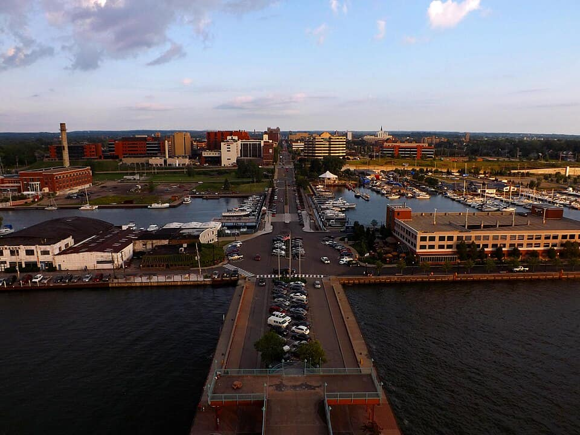
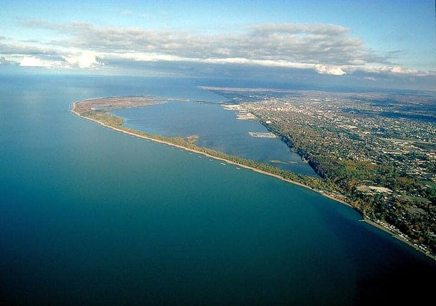
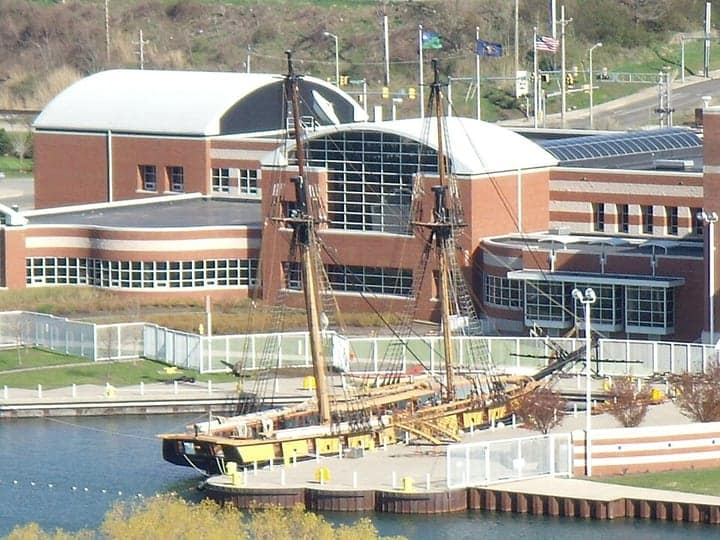
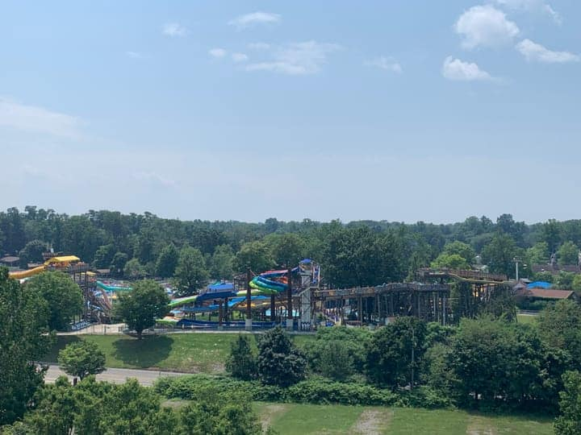

United States
Erie
the Bayfront, the wine belt & the I-79 corridor to Pittsburgh
84 places · 6 areas · every one sourced, pinned and status-checked · last checked · 1 closed, kept for the record. Ordered by tier, then by number of named sources. How we choose
Greek sauce · sponge candy · Schaefer's Auto Art
Start with New York Lunch (The Original)

Start with

Erie, PA 50 places · area 1 of 6
Bayfront, Presque Isle, downtown, Millcreek
-
1 Must see within Erie, PA
Schaefer's Auto Art
A free roadside sculpture garden of larger-than-life outsider art welded from old car and truck parts — a spider built from a whole VW Beetle, a bumblebee from a cement truck. One of northwest PA's most-photographed oddities; park in the gravel lot along Hershey Road.
Look for ART
3705 Hershey Rd, Erie, PA 16506
Recommended by , , +1,

Photo: Ken Winters, U.S. Army Corps of Engineers · Public domain · Wikimedia Commons (resized) 2 Must see within Erie, PA
Presque Isle State Park
A 3,200-acre sandy peninsula arcing into Lake Erie — Pennsylvania's only 'seashore,' with 13 beaches, lagoons, a 13.5-mile multi-use trail and some of the best migratory birding in the state. Erie's single most-visited attraction and the geographic heart of the guide.
Look for NATURE
301 Peninsula Dr, Erie, PA 16505
Recommended by , ,

Photo: Pnoble805 · CC BY 2.5 · Wikimedia Commons (resized) 3 Must see within Erie, PA
Erie Maritime Museum & U.S. Brig Niagara
Bayfront museum and homeport of the U.S. Brig Niagara, a sailing reconstruction of Commodore Oliver Hazard Perry's relief flagship from the 1813 Battle of Lake Erie ('We have met the enemy and they are ours'). Exhibits on the battle and Great Lakes sail; the ship sails in season.
150 E Front St, Erie, PA 16507
Recommended by , ,
-
4 Must see within Erie, PA · American
New York Lunch (The Original)
Opened 1927 and claims to be the first place to serve Erie's signature Greek dog; the Greek sauce is a spiced-up Greek pasta-sauce recipe brought by the city's early Greek restaurateurs, and it's the defining Erie street food.
East Ave, Erie, PA 16504
Recommended by , ,
-
5 Must see within Erie, PA · Italian
Stanganelli's Italian Foods
Making Erie's deep-fried pepperoni balls since 1961; so central to the city's identity that the Erie SeaWolves rebranded as the 'Pepperoni Balls' and QVC sold out 18,000 of Stanganelli's frozen ones in 2020.
602 E 25th St, Erie, PA 16503
Recommended by , ,
-
6 Must see within Erie, PA · Breweries
Lavery Brewing Co.
A cornerstone of the Lake Erie Ale Trail — a downtown Erie brewery whose taproom is among the city's busiest, pouring a wide range of styles alongside a well-reviewed kitchen.
128 W 12th St, Erie, PA 16501
Recommended by , ,
-
7 Must see within Erie, PA · American
Lawrence Park Dinor
A 1948 Silk City diner in Lawrence Park and the only 'dinor' — the northwest-PA spelling — on the National Register of Historic Places (2004). Seventy-five-plus years of counter-service classics, most famously the Greek omelet drowned in Erie's signature Greek sauce.
4019 Main St, Erie, PA 16511
Recommended by , ,
-
8 Must see within Erie, PA
Tom Ridge Environmental Center
The free year-round gateway to Presque Isle — interactive exhibits on the peninsula's ecology, a big-screen orientation film and a glass-enclosed 75-foot observation tower over Lake Erie and Waldameer. Named for the Erie-raised former PA governor and Homeland Security secretary.
Look for NATURE
301 Peninsula Dr, Erie, PA 16505
Recommended by ,

Photo: Cards84664 · CC BY-SA 4.0 · Wikimedia Commons (resized) 9 Must see within Erie, PA
Waldameer Park & Water World
A family-owned amusement park at the doorstep of Presque Isle, open since 1896 and billed as the sixth-oldest continuously operating park in the U.S. Its wooden coaster Ravine Flyer II is a perennial Golden Ticket top-ten pick; free admission and parking, pay per ride.
Look for AMUSEMENT
220 Peninsula Dr, Erie, PA 16505
Recommended by ,
-
10 Must see within Erie, PA
Hagen History Center
Erie County's history campus across four buildings, anchored by the 1891 Richardsonian-Romanesque Watson-Curtze Mansion (24 rooms, period interiors, exhibits on Erie's brewing and sporting heritage). Its grounds now also hold Frank Lloyd Wright's relocated original San Francisco office — a marquee addition making it one of northwest PA's top museums.
Look for MUSEUM
356 W 6th St, Erie, PA 16507
Recommended by ,
-
11 Must see within Erie, PA · American
Sara's Restaurant
The seasonal 1950s-themed drive-in guarding the entrance to Presque Isle since 1980 — vintage gas pumps, red picnic tables, char-grilled Smith's dogs and orange-vanilla twist; lines can run an hour at peak.
25 Peninsula Dr, Erie, PA 16505
Recommended by ,
-
12 Must see within Erie, PA · Sponge candy
Romolo Chocolates
A four-generation Erie chocolatier whose sponge candy (and sponge-candy truffles) is a benchmark for the regional treat that can only be made in cool, dry weather; Erie sits in the heart of the 'Sponge Candy Crescent.'
1525 W 8th St, Erie, PA 16505
Recommended by ,
-
13 Must see within Erie, PA · Breweries
The Brewerie at Union Station
A brewpub set in Erie's historic Union Station — trains still stop upstairs — pairing fresh house ales with a scratch menu; consistently rated among the best restaurants in the city.
123 W 14th St, Erie, PA 16501
Recommended by ,
-
14 Must see within Erie, PA · Asian
Saigon Nights
Co-owner Nga Rastatter grew up cooking in her family's restaurant in Vietnam and opened Erie's flagship Vietnamese room in the former Khao Thai building in late 2022 because the nearest pho had been in Cleveland or Pittsburgh; the pho is widely called the best in the city.
2430 W 8th St, Erie, PA 16505
Recommended by ,
-
15 Must see within Erie, PA · Asian
Like My Thai
Chef Mike Augustine ran a pop-up for nearly a decade before a successful Kickstarter let him settle Like My Thai downtown in early 2015; he cooks every dish himself from an open kitchen in the middle of the room and it is regularly called one of the best restaurants in Erie County.
827 State St, Erie, PA 16501
Recommended by ,
-
16 Must see within Erie, PA · Asian
Bar Rōnin
Chefs Dan Kern (of 1201 Kitchen) and Adam Williams' contemporary Japanese izakaya in West Erie Plaza — Erie Reader's 2024 Best Restaurant and a near-winner for Best Sushi, prized as much for its craft cocktails as its food.
948 W Erie Plaza Dr, Erie, PA 16505
Recommended by ,
-
17 Must see within Erie, PA · Italian
John's Wildwood Pizzeria
Serving Edinboro and Erie since 1979, John's Wildwood won Best Pizzeria in Erie Reader's 2025 Best of Erie (over runners-up Ippa and Valerio's) and has topped local pizza rankings for well over a decade — Erie's benchmark scratch pizza, hoagie and wing shop.
6008 Knowledge Pkwy, Erie, PA 16510
Recommended by ,
-
18 Must see within Erie, PA · American
Pineapple Eddie Southern Bistro
Chef Jean Paul, born in Port-au-Prince and trained from Chicago to NYC, fuses Haitian technique with Southern soul food; the shrimp & grits and seared catfish have made it one of Erie's most talked-about tables and a fixture on lists of Pennsylvania's beloved Black-owned restaurants.
1402 W 10th St, Erie, PA 16502
Recommended by ,
-
19 Worth the detour within Erie, PA
Perry Monument
An 80-foot limestone obelisk on Crystal Point at Presque Isle, dedicated 1926 on the 113th anniversary of the Battle of Lake Erie, honoring Commodore Oliver Hazard Perry and the sailors who built and sailed his fleet from Erie's harbor in 1813. Sited to be visible from the mainland across Misery Bay.
Look for MONUMENT
Crystal Point, Presque Isle State Park, Erie, PA 16505
Recommended by , ,
-
20 Worth the detour within Erie, PA
Erie Bluffs State Park
A 587-acre undeveloped stretch of Lake Erie shoreline twelve miles west of the city, where trails run through oak savanna and along 90-foot bluffs to a wild, uncrowded beach and the mouth of Elk Creek — the quiet, rugged counterpart to Presque Isle.
Look for NATURE
11122 West Lake Rd, Girard, PA 16417
Recommended by , ,
-
21 Worth the detour within Erie, PA
Splash Lagoon Indoor Water Park Resort
A Polynesian-themed indoor water park kept at 84 degrees year-round — nine slides, a 30,000-square-foot wave pool, a FlowRider and a five-story treehouse — attached to several hotels off Peach Street. One of Erie's top family attractions, rain or snow.
Look for AMUSEMENT
8091 Peach St, Erie, PA 16509
Recommended by , ,
-
22 Worth the detour within Erie, PA
Asbury Woods
A free 234-acre Millcreek nature preserve with five miles of trails, a boardwalk through a wooded wetland and a year-round nature center — a beloved local spot for birding, maple-sugaring programs and easy family walks.
Look for NATURE
4105 Asbury Rd, Erie, PA 16506
Recommended by , ,
-
23 Worth the detour within Erie, PA
North Pier Lighthouse
The shortest of Erie's three lighthouses at 34 feet, standing at the tip of Presque Isle where the bay meets the lake — and the last square, pyramidal-style light tower left in the United States. A 20-minute drive from the park entrance and a favorite sunset perch.
Look for LANDMARK
North Pier, Presque Isle State Park, Erie, PA 16505
Recommended by , ,
-
24 Worth the detour within Erie, PA · American
Flagship City Food Hall
Erie's first food hall, opened 2021 as part of the EDDC's $100M downtown revitalization in the former Park Place/Sherlock's buildings; about ten independent vendors (Ippa Pizza, Dina's Dominican, Jo's Brooklyn Bagel, Khir Damascus, CheesErie and more) plus a bar and 160+ seats.
22 N Park Row, Erie, PA 16501
Recommended by , ,

North East & the Lake Erie wine belt 6 places · area 2 of 6

Meadville & Crawford County 5 places · area 3 of 6
Allegheny College, Market House

Edinboro & Cambridge Springs 7 places · area 4 of 6

Grove City, Mercer & Slippery Rock 8 places · area 5 of 6

I-79 corridor south to Pittsburgh 8 places · area 6 of 6
Conneaut Lake, Zelienople, Harmony, Cranberry
How we choose
Every place is recommended by named sources (review-aggregator star ratings never count as the recommender), pinned to its door from a published coordinate, and status-checked. Closed places stay, flagged, so you know they’re gone.
- Must see
- The places to plan a visit around — graded within each area, not across the city.
- Worth the detour
- Strong picks, worth going out of your way for.
- Deep cut
- For the curious: smaller, odder, more local.
Within each area, places are ordered by tier, then by number of named sources — never by popularity. We don’t add ratings, prices or opening hours of our own. Any quoted in a write-up are the source’s, dated.
43 sights and 41 places to eat across Erie, PA — the Bayfront and Presque Isle — the Lake Erie wine belt at North East, and the I-79/US-19 corridor south toward Pittsburgh through Meadville, Edinboro and Grove City. Each is traceable to the source that named it. Erie’s canon is its own: the Greek-sauce hot dog, Stanganelli’s pepperoni balls, sponge candy, Great-Lakes perch, and the wineries & breweries — plus Presque Isle, the U.S. Brig Niagara and the Bicentennial Tower.
Take Erie with you
Every place, its sources, the Guidebook and the photos at a small size. Map tiles are not saved: offline, the map shows our own pin schematic and every place stays listed.